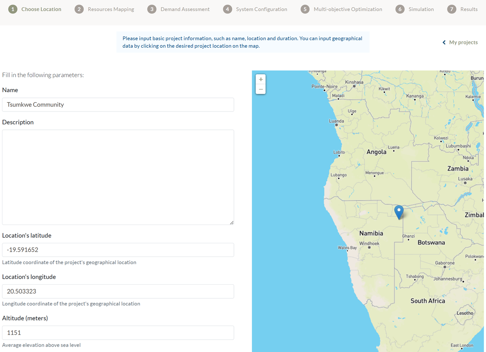

<main>
    <div>
        <!--        TODO should we be getting rid of the pre-loaded communities? what's the situation with datenschutz? -->
        <p>
     In the first step, “Choose Location” the name of the project is defined, and the location is set by entering the
            geographic coordinates. The coordinates can be entered as decimal degrees or selected by clicking the
            desired project location on the map. You can zoom into the map by scrolling and panning by dragging.
            Once a site is selected, the latitude and longitude will be automatically filled in.
            For example, the geographic coordinates for the case study Tsumkwe in Namibia are provided
            (latitude: -19.592, longitude: 20.502). Additional parameters to be indicated are
            population within the project scope, project duration, i.e., the number of years the project is intended to
            be operational, currency, and discount factor. The discount factor typically reflects the annual rate of
            depreciation of the future value of money relative to its current value. When all project parameters are
            entered, the subsequent step is initiated by clicking “Next”.
        </p>
        <p>
            
        </p>
    </div>
</main>
